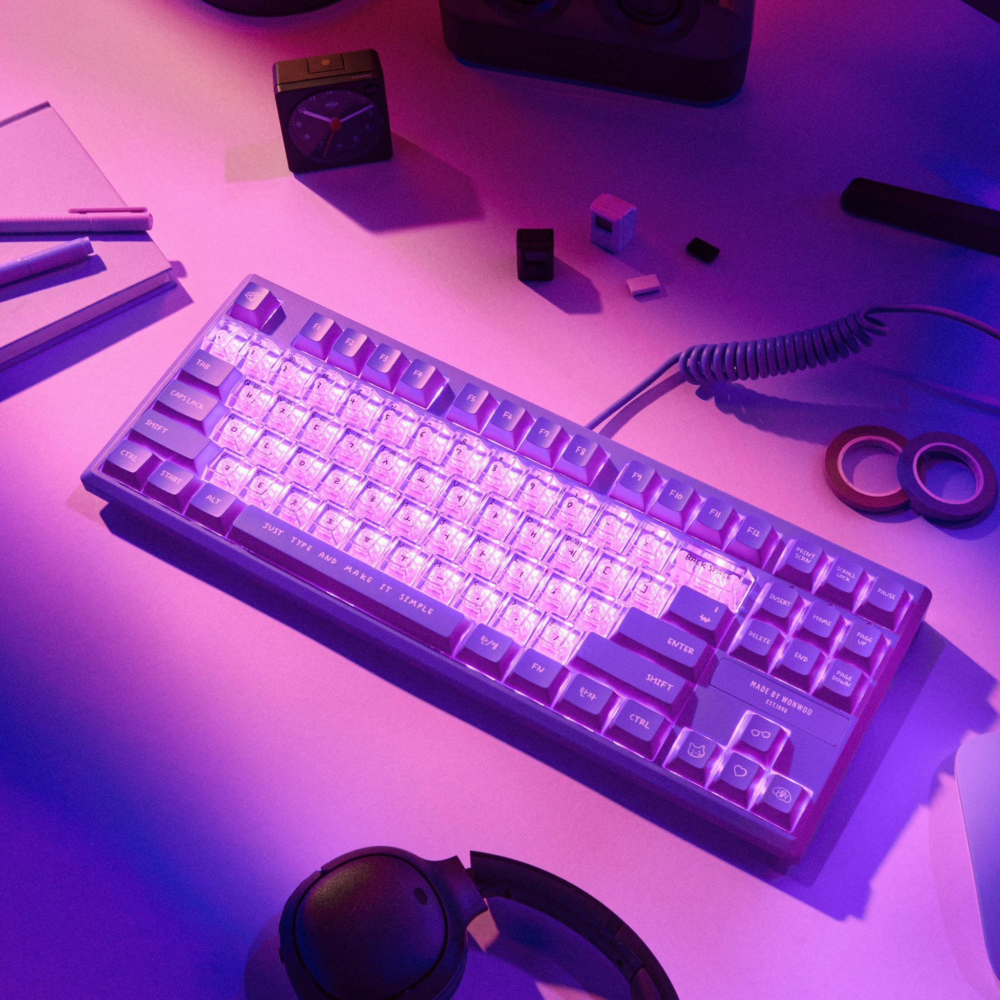

계획대로 되는 게 없어서
요즘 나에게 일어나는 일들이 정녕 믿기지 않는다.
멀쩡하던 서버도 말썽이고, 데이터도 날아가고, 짜놓은 코드도 날아가고..
나름대로 열심히 준비하던 논문을 제출하지 못하기도 하고,
물 마시려는데 컵에 구멍이 나서 혼자 샤워한 사람 되기도 하고,
일어서다가 노트북 떨어뜨려서 벽지와 장판 노트북까지 모두 파손되기도 하고..
그 외에도 이것저것,, 며칠 사이에 이게 맞나 싶은 일들이 정말 많이 일어났다.
이 정도면 정말 말도 안 되게 억지스러운 정도였다..
역시 계획대로 되는게 하나도 없다.
열심히 노력하다 갑자기 나태해지고 잘 참다가 조급해지고
희망에 부풀었다가 절망에 빠지는 일을 또다시 반복하고 있다.
그래도 계속해서 노력하면 수채화를 더 잘 이해할 수 있겠지.
그게 쉬운 일이었다면, 그 속에서 아무런 즐거움도 얻을 수 없었을 것이다.
그러니 계속해서 그림을 그려야겠다.
- 빈센트 반 고흐가 동생 테오에게 쓴 편지 중에서
나가며.
그러니, 나는 계속해서 새로운 키보드를 사야겠다.👩💻
그러면 나도 코드를 더 잘 이해할 수 있겠지 🤣

영롱하다.🥺 이 키보드가 주는 메세지 또한 강력하다.
“Life is like a keyboard. It will be written as how you type it out.”
앞으로 걱정되는 일들이 한가득이지만, 일단 저거를 사면 뭔가 다 이겨낼 수 있을 것만 같은 기분이 든다.
금요일에 오픈런해야지 😻 지금 제법 설렌다.
하나 둘 셋 아자아자 화이팅!
Enjoy Reading This Article?
Here are some more articles you might like to read next: